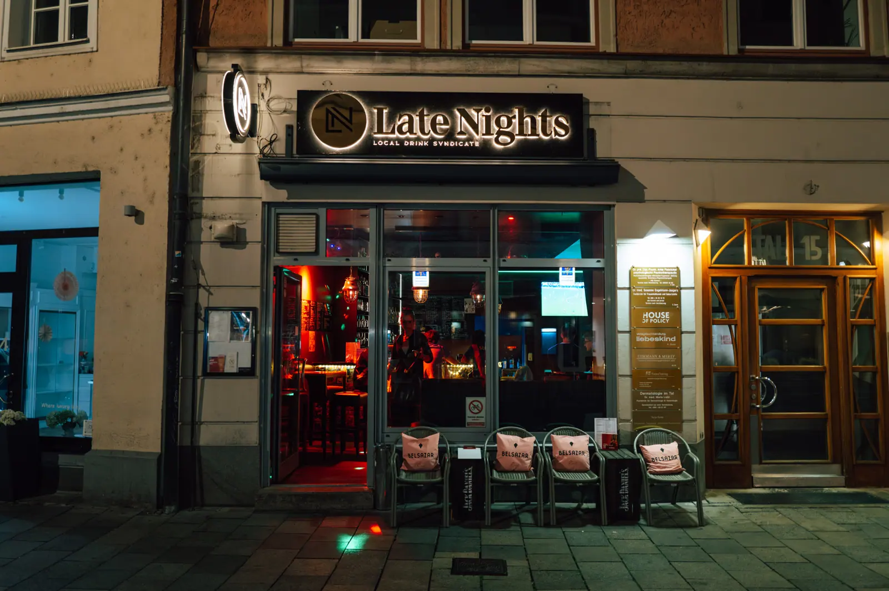
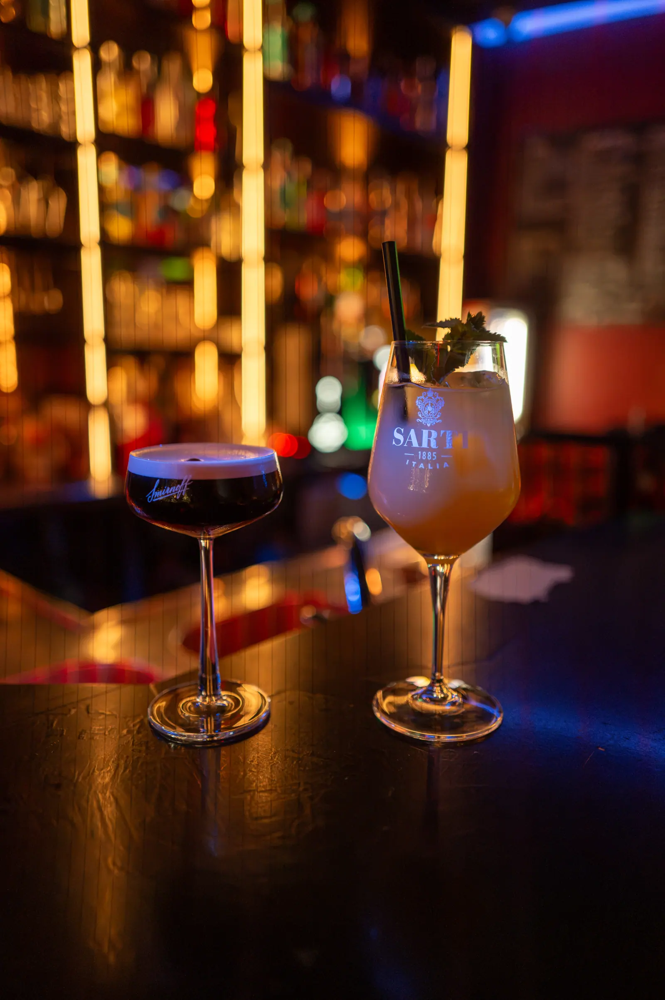
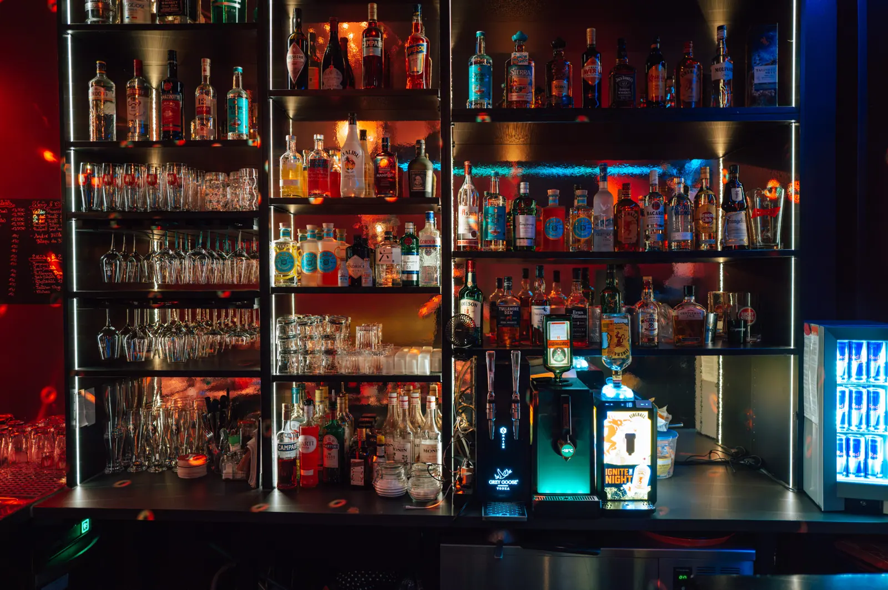
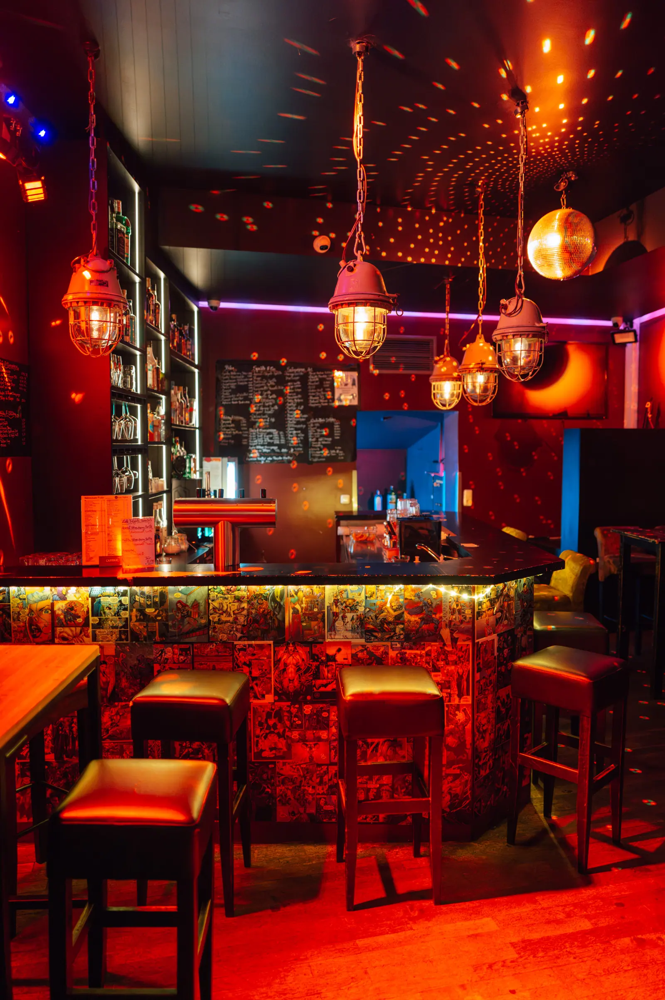
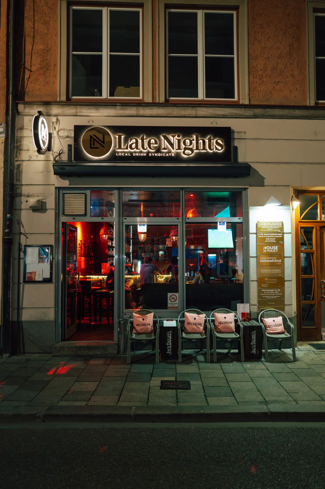

Bar und Eventlocation im Tal
Late Nights, Tal 15, mitten in der Münchner Altstadt. Jeden Abend ab 20 Uhr, Schluss ist um 5.
Drinnen leuchtet die Theke
Comicseiten rundum, Kupferlampen über dem Tresen, Discokugeln unter der Decke. Laut genug zum Feiern und klein genug, dass man sich kennt.
Täglich 20 bis 5 Uhr
Die Bar
Late Nights liegt im Tal, auf halbem Weg zwischen Marienplatz und Isartor. Eine kleine Bar mit großer Theke, in der man nach der Arbeit auf einen Drink vorbeikommt und manchmal erst geht, wenn draußen schon die Lieferwagen fahren.


Die Theke
Rundum mit Comicseiten beklebt und von unten beleuchtet. Hier fangen die meisten Abende an, und viele hören hier auch auf.
Das Licht
Schiffslampen aus Kupfer, mehrere Discokugeln und Neonleisten in Rot, Blau und Grün. Tagsüber sieht hier niemand rein, nachts sieht man es vom Tal aus.
Die Nacht
Geöffnet jeden Tag von 20 bis 5 Uhr. Wenn in der Altstadt die meisten Türen zu sind, ist hier noch Betrieb.
Local Drink Syndicate

Drinks
Cocktails, Longdrinks und Aperitivos, dazu frisch gezapftes Bier. Gemixt wird an der Theke, mit Blick auf die Flaschenwand bis unter die Decke.
Was es gerade gibt, steht an den Tafeln hinter dem Tresen. Wer nicht weiß, was er will, fragt einfach an der Bar.

Feiern im Late Nights
Ob Geburtstag, Teamabend oder Afterparty: Die Bar lässt sich für eure Feier reservieren, als eigener Bereich oder komplett exklusiv. Licht, Discokugeln und Musik sind schon da. Ihr bringt die Leute mit.

Wofür die Bar gebucht wird
- Geburtstag
- Vom runden Geburtstag bis zur Party, die eigentlich klein bleiben sollte.
- Firmenfeier und Teamabend
- Nach Feierabend raus aus dem Büro und rein in die Altstadt, mit eigenem Bereich und Getränken nach Absprache.
- Weihnachtsfeier
- Im Dezember sind die Abende schnell vergeben. Wer früh anfragt, hat die Wahl.
- Junggesellenabschied
- Ein fester Treffpunkt in der Altstadt, bevor die Runde durch München zieht oder wenn sie zurückkommt.
- Afterparty
- Nach Hochzeit, Messe oder Firmenevent, wenn noch niemand nach Hause will. Offen ist bis 5 Uhr.
- Private Party
- Mit eigener Playlist oder eigenem DJ, nach Absprache auch außerhalb der normalen Zeiten.

Was die Bar mitbringt
- Theke mit Personal, das auch bei vollem Haus den Überblick behält
- Licht mit Discokugeln, Neon und Kupferlampen, ohne dass ihr etwas aufbauen müsst
- Musikanlage für Playlist oder DJ
- Plätze an der Theke, an Tischen und Stehplätze zum Tanzen
- Mitten in der Altstadt, mit S- und U-Bahn in wenigen Minuten erreichbar
- Geöffnet bis 5 Uhr, niemand muss um Mitternacht gehen
So läuft es ab
- Anfragen. Datum, Anlass und ungefähre Gästezahl schicken, am einfachsten über das Formular unten.
- Absprechen. Wir melden uns mit einem Vorschlag zu Bereich, Ablauf und Getränken.
- Feiern. Ihr kommt mit euren Gästen, um die Bar kümmern wir uns.
Feier anfragen
Ein paar Angaben genügen. Daraus entsteht eine fertige Nachricht, die ihr per WhatsApp abschickt oder kopiert.
Bilder
Ein Abend im Late Nights, von der Theke bis zur Toilette. Auch die ist mit Comics tapeziert.



Anfahrt
- Adresse
- Late Nights
Tal 15
80331 München - Geöffnet
- Täglich 20 bis 5 Uhr
- Telefon
- 0177 9278497
- Mit der Bahn
- S-Bahn und U-Bahn Marienplatz oder S-Bahn Isartor, von beiden sind es rund 5 Minuten zu Fuß.